Created: 10/1/2010
By: KaptinLin
Email: KaptinLin@Gmail.com
Thank you for purchasing my theme. If you have any questions that are beyond the scope of this help file, please feel free to email via my user page contact form here. And You should follow me on twitter to get the updates. Thanks so much!
1. Downloading from Themeforest
Download the Striking theme and unzip this download. Any good quality zip program will do. Just follow the unzip instructions of your program carefully. Some give you the option of unzipping only a portion, or all, of the files. You want to select "all". Once unzipped, you will find the following folders will be in the unzipped directory:
2. Installing on your Host
Before you install the theme, make sure your installed wordpress version is 3.1 or higher. You also need to have PHP 5 or higher versions in order for Striking to function correctly.
Method 1 - Upload via Wordpress built in Theme Install function
Log into your existing wordpress installation - if you just recently installed wordpress on your site, you most likely will have the default "Twenty Ten" theme supplied in all wordpress default installs as the active theme:
Method 2 - Upload via FTP
You need an ftp program such as Filezilla (free) or CuteFTP Home or CuteFTP Pro (free for 30 days then cost money) both found at www.download.com CuteFTP Pro has many online editing functions that heavy ftp users and developers often find useful.
You will need to first uncompress the striking.zip file you have found in the master zip downloaded from Themeforest. This zip uncompresses into a normal folder striking. This is the only folder you need to transfer via ftp and if you open it, you will see all sorts of folders and files which contain the Striking coding (see picture below).
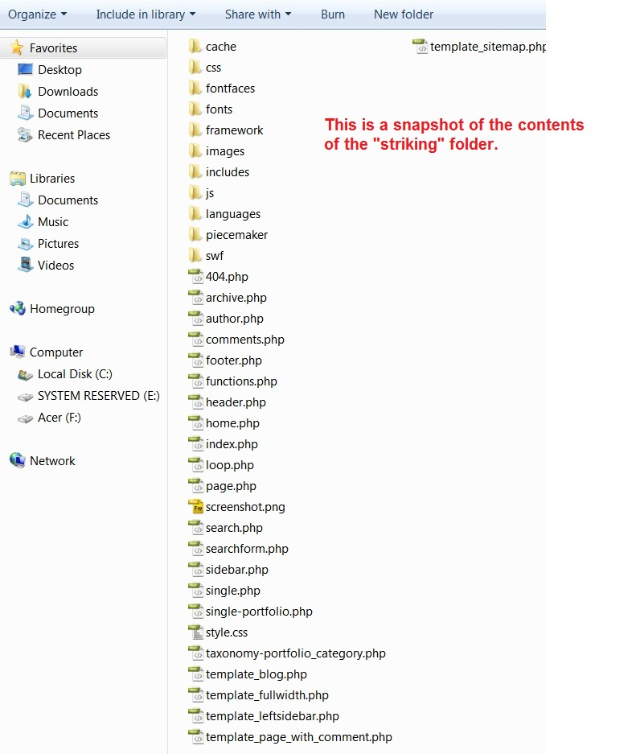
You transfer this folder which contains the above files to the WordPress installation root directory:
/wp-content/themes/
by way of your FTP program. Do not upload any of the other folders such such as licensing or resource or documentation. Uploading any of the other folders may cause problems resulting in your Striking theme working properly.
3. Activate Striking as Default Theme
After you have completed the upload, activate the theme as you would activate any other theme. Normally when you get the message the install is complete, you are given a prompt for the option to activate the theme. So go ahead and activate Striking and you are done your installation!
4. The Striking Theme Panels
Once you have activated Striking, you will see the new Striking panels added below the Wordpress Settings Panels. Expand the Striking panel menu if it is minimized and you will see 16 different supanels (as of Striking Ver 3.0). Now you are ready to start your website development using STRIKING!!
5. Problems Installing?
On rare occassions Striking does not install properly and you get an error message while attempting the install, or during or after activation of the theme. See the section below on "Installation Errors &Theme Functions Not Working" for some trouble shooting tips.
As a bonus I supply you with a complete demo package. It can assist you in learning striking fast. Below are the steps to installing the demo content:
As in performing a new install, there is more then one way to do an update your Striking Theme.
Most often updates are performed by using an FTP program. Traditionally, the wordpress default Install Theme function was not applicable to updating premium themes, but if you have installed a free 3rd party plugin called "Easy Theme and Plugin Updater" then you can use the Install Theme wordpress function to update your theme. Please reference that plugin's instructions for using it to do the theme update.
The most important aspect of updating is that one should always have made a backup of their site and database prior to performing an update. Updates are very easy to do, but because we are dealing with the internet, and also several different programs attempting to work together, sometimes updates will fail, and "bad things" can happen to your existing site. If you have made a backup, then the problems may be reversible.
Recent versions of Striking (Ver 2.0+) have the ability for you to export your current web content as a wordpress xml file, so it is suggested that you use this feature found in the Advance Panel to create a copy of your site data as well. So later, should you have a problem, you can use the import function also found in Striking in the Advance panel to import your site.
DON'T WORRY - UPDATES RARELY FAIL, AND WE ARE HERE TO ASSIST. IF YOU MADE A BACKUP, THEN THERE IS UNLIKELY TO BE ANY ISSSUES AT ALL.
Wordpress.org plugins section has many good backup programs to choose from. Choose one that is up to date and is highly rated.
Update via FTP
Many often worry that upgrading by ftp overwrite will cause one to lose the existing content they have input into their site. This is not the case. Your content, formatting and images you have uploaded are not effected, nor is any custom css you have input into the custom css box in the striking general panel.
However, if you have made any custom modifications to your php files - for example you have have hardcoded changes to a file, you will lose those modifications in the update method above. You should definitely save each php or css file you have "hard" modified, so that you can reinstall them after the global program update.
Striking use TimThumb for image resizing. It requires the GD library to be installed. If your thumbnails are not working, check with your host to make sure that you have it.
All files and folders on a website have what is called CHMOD permissions. CHMOD = Change Mode, and refers to the unix command that determines how much access is permitted to a file or folder. You can find out more about how Wordpress deals with permissions at http://codex.wordpress.org/Changing_File_Permissions
Sometimes when you are installing or updating wordpress, the new wordpress install may set/reset file permissions resulting in you having difficulties with images / slider operation / changing colors, etc. You should know that how your server host has set up its server security also is an equally important factor. Every host sets up their servers differently, and this also can cause some functions not to work correctly until you have modified the default permissions.
Finally, to change to certain "open" permissions, you will likely have to use the control panel file manager supplied by your host, rather then an ftp program (many ftp programs have a function that allows one to modify permissions). Most hosts configure server security so that open file permissions such as 777, 767, and sometimes even 757 need to be done from a host level, in order to prevent a non-site administrator from hacking the site security. You may think that you have changed a permission to 777 via ftp (it will often say successfully changed), but if the problem persists, likely the change is not "hardcoded" on the host side. Permissions can be a complex issue, and you should not hesitate to speak with your host customer service if you are running into issues.
You need to give your image cache folder (/themes/striking/cache/) with CHMOD 777 permissions.
Make sure the file (/themes/striking/includes/timthumb.php) has the correct permissions needed for your server. In most cases this is "644" but it may vary depending on where you are hosted. If 644 does not work, try 755 or 777.
Some servers may have mod_security settings that will stop the timthumb scripts from working. You should always contact your host if you are having problems to make sure they do not have settings enabled that would stop the script from working.
If you need help installing Wordpress see the link below:
http://codex.wordpress.org/Installing_WordPress
Striking have several options pages for customize your website. Now we see the general options page.
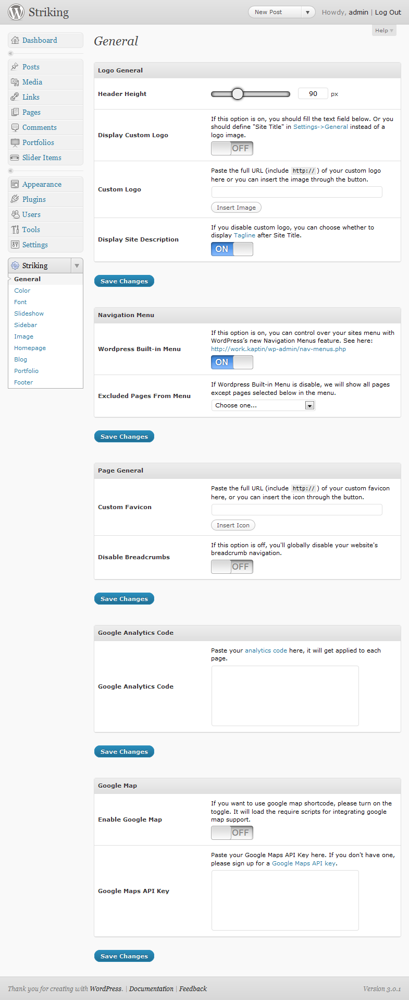
for Navigation Menu section, If Wordpress Built-in Menu is on, Striking will use WordPress's Custom Navigation Menu. You can see official documentation here. Click here to see how to make it works.
Striking has flexible color control system. You can change the element's color just by selecting what you preferred in the color picker. After clicking on the "Save Changes" button, you can go to your website URL in your web browser to view the newly selected color variation.
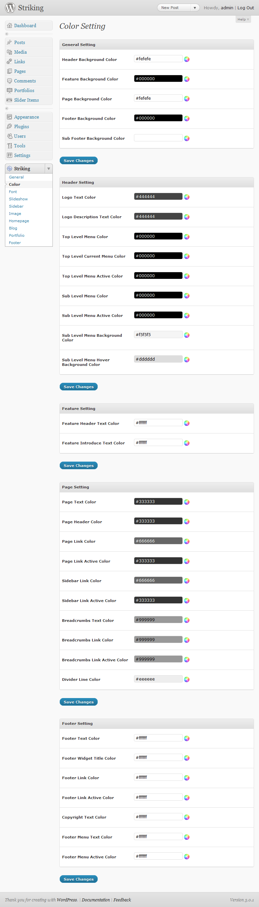
Font Options page have two sections. As shown below on the top of the page, you can customize your website element's fontsize easily.
Striking support "cufón" font replacing script on your website. Click here to see more information about this script and what it does.
And Striking contains some creative fonts which had converted for cufon use under '/wp-content/themes/striking/fonts' folder. The page will list these fonts on the screen.
If you want to use your own font, learn from here.
You can choose one font you prefer, turn on it's toggle button and turn off the other's. After "Save Changes", you will see the replacing effect.
If you want to replace the elements what you prefer or use more than one fonts, you should fill cufon replace scripts into "Cufon code" option textarea, and turn on the toggle button of fonts you used in the scripts. Learn more about cufon's usage here.
The following is the list of elements which you can replace with.
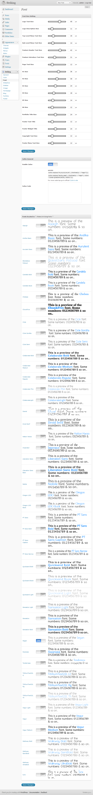
Striking contains 3 different slider show types. When you select one type, you should configure the corresponding options.
After configuration, click here go to see how to add slider item.
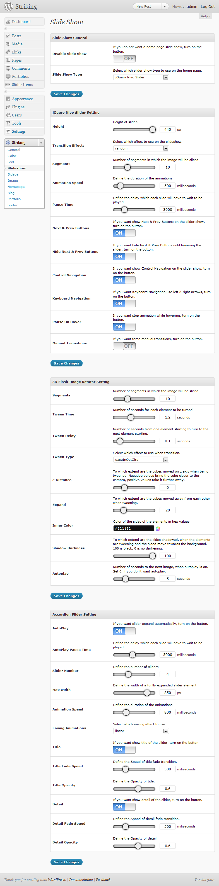
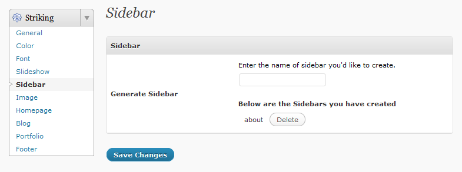
Striking support dynamic sidebar, you can assign a page or post a custom sidebar that created in Sidebar Options page.
First, enter the name of the new custom sidebar you would like add and click on the "Save Changes" button.
You will now see your newly created custom widget available by clicking on Appearance -> Widgets on your WordPress administration menu. You can now add Widgets to your newly created sidebar.
You can now activate your newly created sidebar on a post-by-post or page-by-page basis whenever you create or edit a page or post in the "Striking Page General Options" panel as shown below:
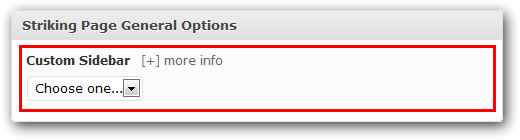
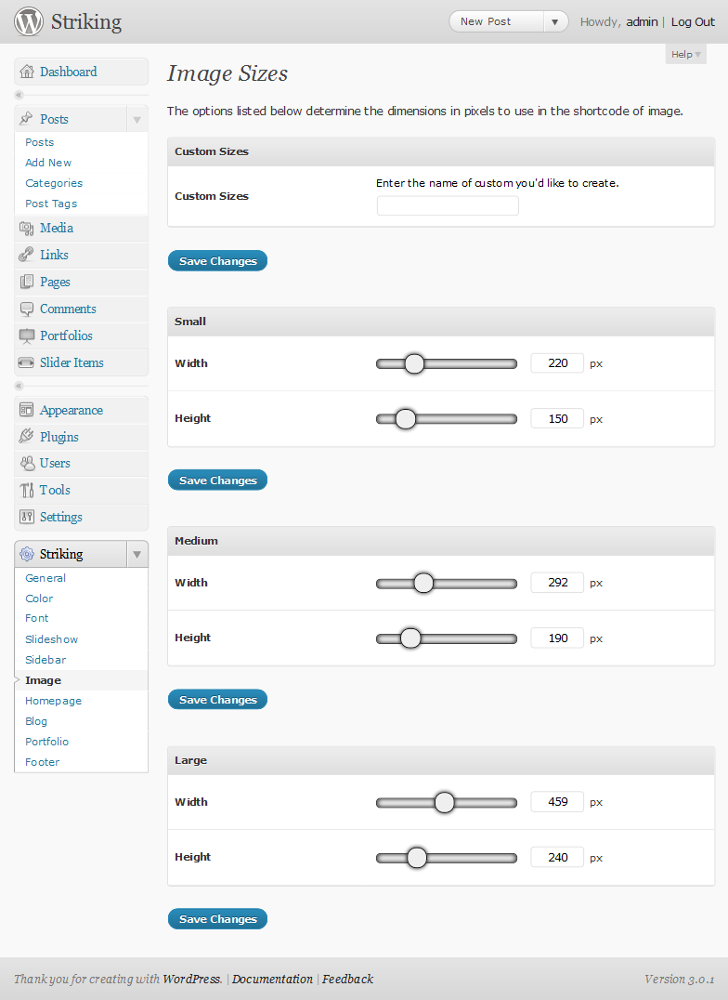
To make homepage displays as expect, you should go to Appearance -> Reading SubPanel, set the "Front page displays" Option to "Your latest posts".
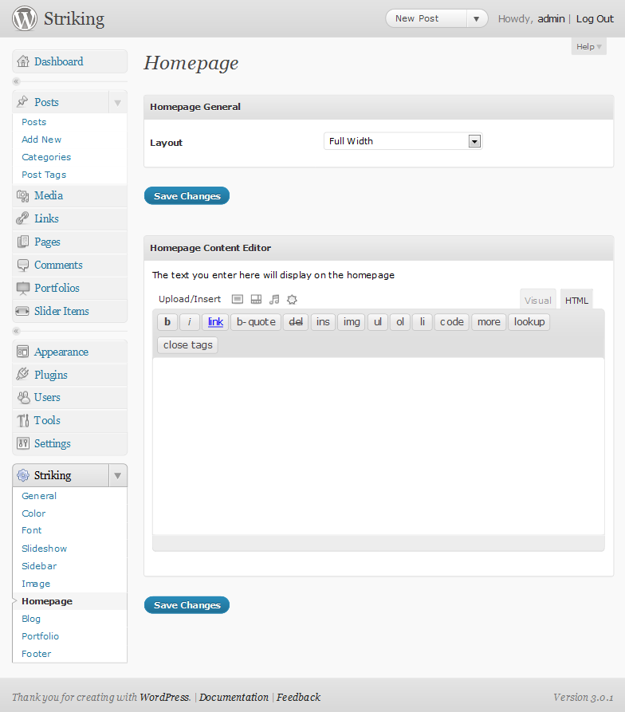
If you want to display your blog, you should create a blank page with the name of your choice first. Then go to Blog Options page, assign the Blog Page option with the page you created.
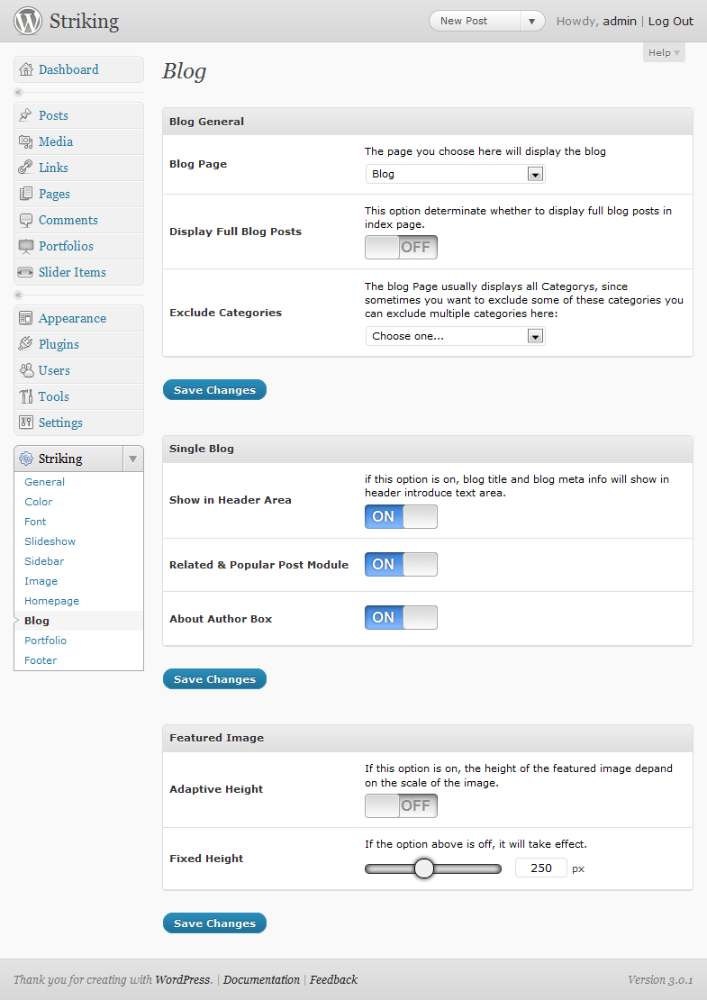
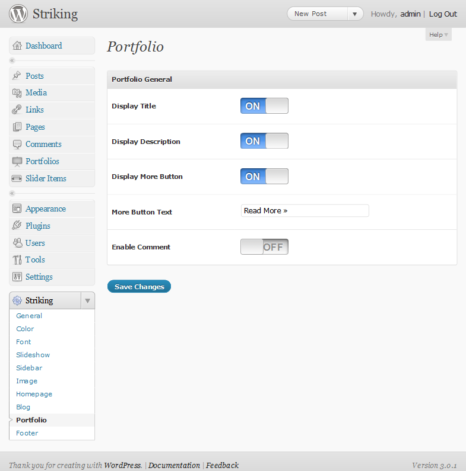
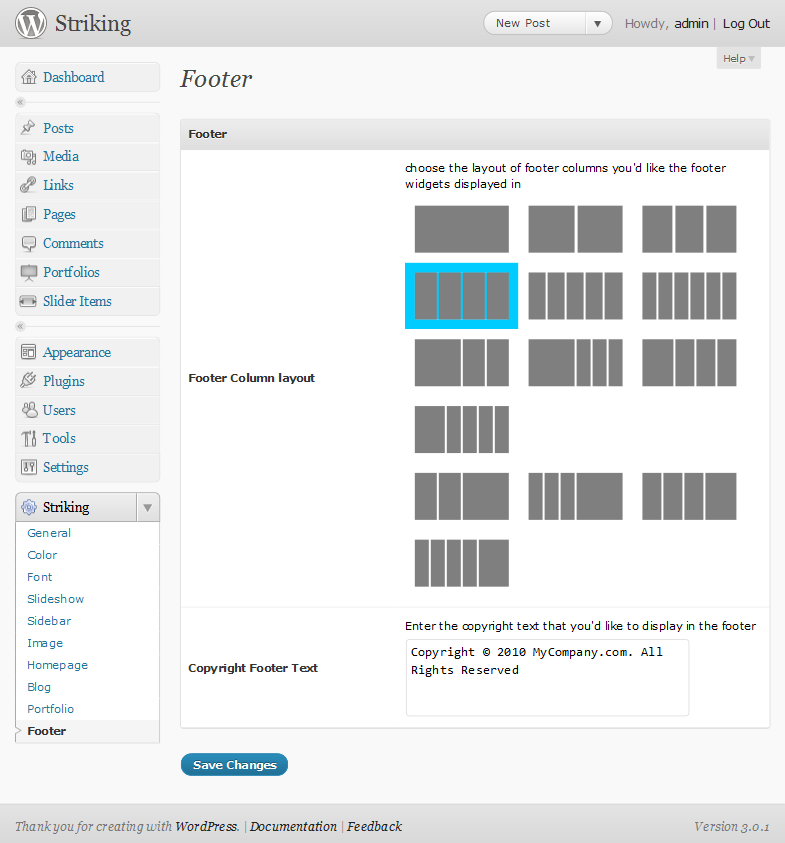
Striking contain a footer custom menu. Click here to see how to enable it.
If you set "Wordpress Built-in Menu" option on in Striking -> General, you can use WordPress's Custom Navigation Menu system.
Go to Appearance -> Menus subpanel and add two menu items as shown in the “Wordpress Official Documentation“.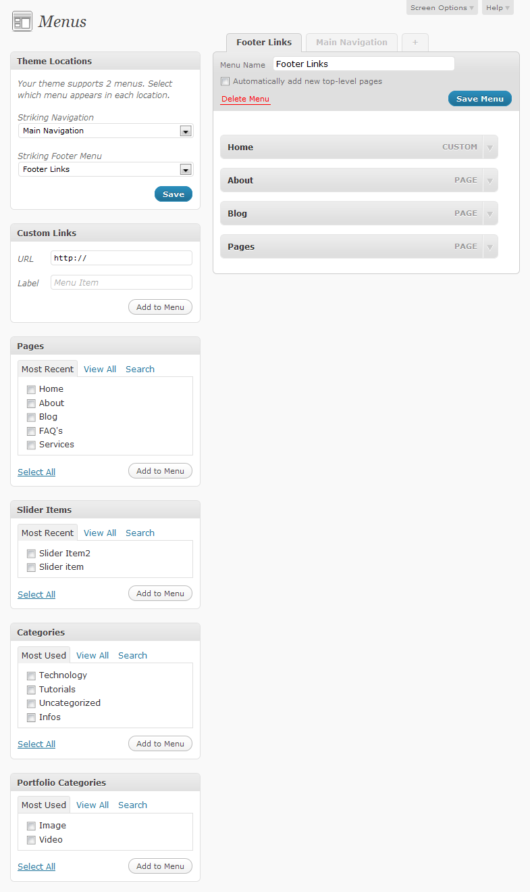
As shown above, I named the two menus “Main Navigation” and “Footer Links”, but you can call them as you prefer. The important thing is to select them in the “Template Locations” box:
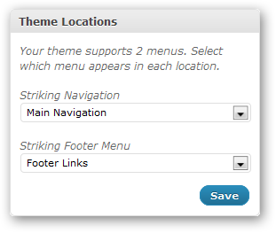
“Striking Navigation” includes a drop-down menu of three levels, while in “Striking Footer Menu” the hierarchical relationship is not shown.
If you want to add a portfolio gallery to your website, follow the steps below:
Create a new page by going to Pages -> Add New in the Administration Panels.
Then change the page template to "Full width".
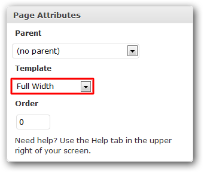
Then use Shortcode Generator to generate the shortcode for portfolio. You can learn more about shortcode here.
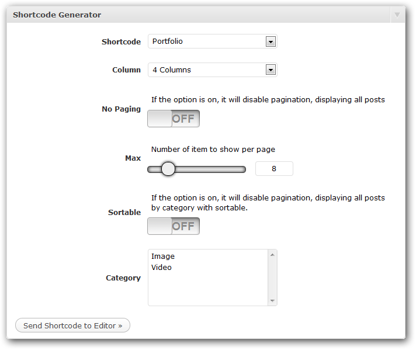
After configuration, remember click "Send Shortcode to Editor" Button.
Then Publish the page.
After creating the portfolio gallery, you should add some portfolio item to it, learn about it here.
If you want to add a new portfolio item, follow the steps below:
Click "Add New" in the "Portfolios" panel.
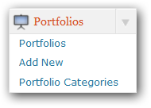
Set the thumbnail of portfolio as Featured Image. Click here to see how to set a Featured Image.
Then configure the portfolio item options.
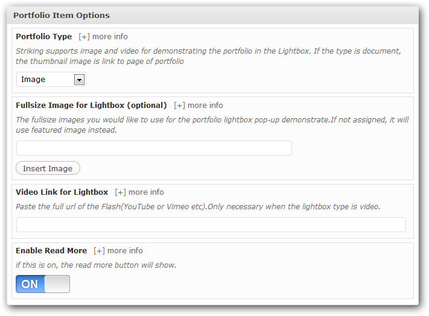
Then fill the title, and add the detail of portfolio to the content editor. You can also add the description to the Excerpt textarea for display in the gallery page.
Once you have done, click Publish button.
If you want to add a new slider item, follow the steps below:
Click "Add New" in the "Slider Items" panel.
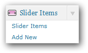
Set the image of slider item as Featured Image. Click here to see how to set a Featured Image.
Notice that default size of slider is 960x440px.
Then after fill the title and the description (only work for Accordion slider), click Publish Button, and go to your homepage, you'll see it works.
If you want to set Featured Image for post,page,portfolio or slider item, follow the steps below:
Go to Add New or open an existing post in editing mode.
locate the Featured Image module and click the Set featured image link.
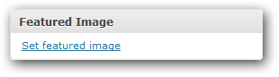
You will see an uploading screen identical to that used when inserting an image into a blog post. Follow the on-screen prompts to choose the image from your computer and upload it or choose it from one of the images already in your Media Library.
Once the image has successfully been uploaded, look underneath the sizing options, and click on the Use as featured image link:
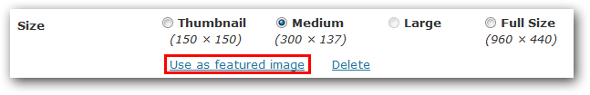
Your Feature image is now set! You can close the Media selector once you’ve chosen the featured image. The image will then appear wherever a featured image is available.
Striking comes with over 60 custom style shortcodes that allow you to add custom styles to your post or page content.
You can easily use Shortcodes by Shortcode Generator.
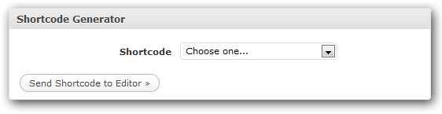
Simply select the style you would like to use then click "Send Shortcode to Editor" to insert the style shortcode into the WYSIWYG editor. You can then type any text within side the shortcode brackets and the style will be applied to the text. You can visit the following url to see the examples of all the custom shortcode styles available for Striking:
http://kaptinlin.com/themes/striking/shortcodes/
To add a contact form to your website, first create a blank page with the name of your choice. Then use Shortcode Generator to add Contact Form shortcode.
Select the Widget shortcode, and you'll find Contact Form listed in it.
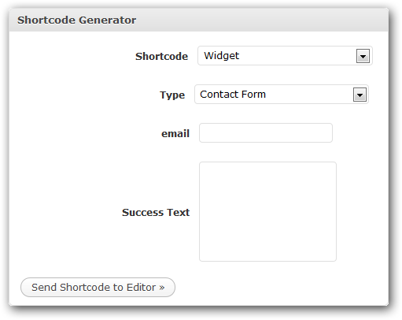
Enter in the email address where you would like the contact form submission to be sent. And fill out the Success Text's textarea for the text rendering after submission.
Note: After set-up, you should send a test message to yourself to see if things are working. The Contact Form use wp_mail function to send mails. If it doesn't work, please check with your host to make sure SMTP and smtp_port have been set in php.ini. Or you can install a Plugin for Wordpress to enable SMTP configuration. For example, Configure SMTP is worked well for me.
Striking comes with 11 custom widgets:
Sub Navigation:
Displays a list of SubPages.
Popular Post:
Displays the popular posts on your site.
Recent Post:
Displays the popular posts on your site.
Recent Post:
Displays the popular posts on your site.
Flickr:
Displays photos from a Flickr ID.
Twitter:
Displays a list of twitter feeds.
Social Icon:
Displays a list of social media icons.
Contact Form:
Displays a email contact form.
Contact Info:
Displays a list of contact info.
Gmap:
Displays a google map.
Simply drag one of your theme's custom widgets to a sidebar and enter the appropriate settings if needed.
Striking comes with three WordPress template pages that you can select when you edit/publish a page from the “Edit Page” “Attributes” settings box as seen below:
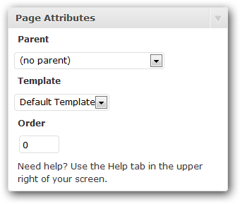
The pages are:
Default Template:
Displays the themeʼs sidebar on the right side of the page.
Full Width Template:
Disables WordPressʼs widget area and allows you to layout content across the full width of the page.
Left Sidebar Template:
Displays the themeʼs sidebar on the left side of the page.
Sitemap Template:
Creates a page that lists all of your sites internal “Pages”, “Categories Archives” and “Blog Posts”.
To activate one of your themeʼs page templates simply select it from the drop-down box and then click the “Publish” or “Update” button.
If you want use your own font with cufon replacement, please follow the steps below:
Just like doing a new install, there is more then one way to do an update successfully. Most often updates are performed by using an FTP program. Traditionally, the wordpress default Install Theme function was not applicable to updating premium themes, but if you have installed a free 3rd party plugin called "Easy Theme and Plugin Updater" then you can use the Install Theme wordpress function to update your theme. Please reference that plugin's instructions for using it to do the theme update.
The most important aspect of updating is that one should always have made a backup of their site and database prior to performing an update. Updates are very easy to do, but because we are dealing with the internet, and also several different programs attempting to work together, sometimes updates will fail, and "bad things" can happen to your site. If you have made a backup, then the problems are very easily reversed. DON'T WORRY - UPDATES RARELY FAIL, AND WE ARE HERE TO ASSIST. IF YOU MADE A BACKUP, THEN THERE IS UNLIKELY TO BE ANY ISSSUES AT ALL.
Wordpress.org plugins section has many good backup programs to choose from. Choose one that is up to date and is highly rated.
Download the latest version of Striking from Themeforest to your drive. As long as you are a purchaser of Striking, you always are entitled to all upgrades free. So check back every so often to the Striking page on Themeforest. If you see that an upgrade has been released and you have an older version number, log into your account, go to the downloads page of your themeforest account interface, and download Striking again.
Unzip the download. As with a new install (see above) you only need the 'striking" folder from the folders unzipped, for the upgrade. You will not be transferring license or resources, etc to your online host.
It is very easy to do an update via ftp. Open your ftp program, and on the drive side, navigate to the "striking" subfolder. On the host side, navigate to
your WordPress installation root directory: /wp-content/themes/
where you have your current version of striking installed.
simply drag over the striking folder from your drive to the themes folder, overwriting the existing striking folder.
Log back into your wordrpess admin and go to your themes panel. You should see the latest version of Striking installed (check the version number). You are done your update!
Many often worry that upgrading by ftp overwrite will cause one to lose the existing content they have input into their site. This is not the case. Your content, formatting and images you have uploaded are not effected, nor is any custom css you have input into the custom css box in the striking general panel.
However, if you have made any custom modifications to your php files - for example you have have hardcoded changes to a file, you will lose those modifications in the update method above. You should definitely save each php or css file you have "hard" modified, so that you can reinstall them after the global program update.
You can learn from here about Translating Striking into your language.
The .po file is in 'striking/languages' folder named 'striking_front.pot'.
You can use Poedit to translate the .pot file. Before translate, you should set the plural forms for Poedit. You can learn from here.
After you enable WPML plugin, You can go to Striking -> General subPanel to enable Language Flags in header.
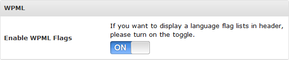
If you want add translate for Portfolio and Slider Items, follow the steps below:
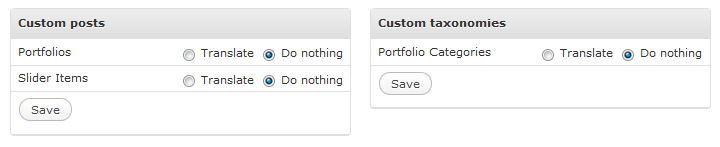
You can install Post Types Order Plugin helping reorder the Slider & portfolio items.
For hierarchical page, you can install Custom Post Type Order Plugin for it.
I've used the following opensource projects, graphics, fonts or other files as listed. Thanks to the author for the creative work they made.
And finally thanks to my special friend Miss Zhang for checking the document.
Once again, thank you so much for purchasing this theme. As I said at the beginning, I'd be glad to help you if you have any questions relating to this theme. No guarantees, but I'll do my best to assist. If you have a more general question relating to the themes on ThemeForest, you might consider visiting the forums and asking your question in the "Item Discussion" section.
KaptinLin